Export ↔ editor parity
quick run · 2026-11-12T20:58:21.837Z · 195s · 128/128 passed. Errors are 0–255 per channel (premultiplied RGBA) against the editor's renderer at the same time; worst rows first.
| scene | path | result | worst frame | mean | max | >24 | raw | flat colour | editor / export / diff |
|---|---|---|---|---|---|---|---|---|---|
| blend All 18 blend modes over a gradient backdrop | preview | pass | 0 | 1.77 | 73 | 0.36% | 2.02 | 1.64 | 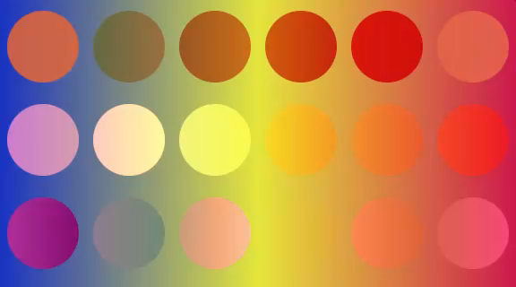 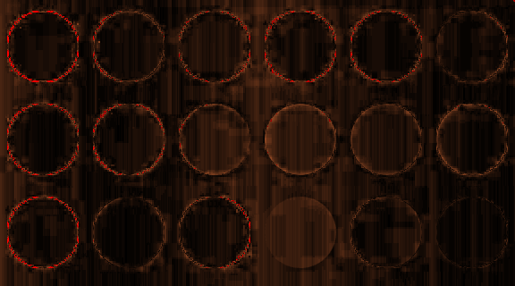 |
| shaders Shader fill (animated) + shader effect (test shaders) | preview | pass | 0 | 1.72 | 94 | 2.32% | 2.63 | 1.89 | 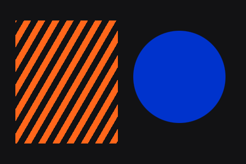 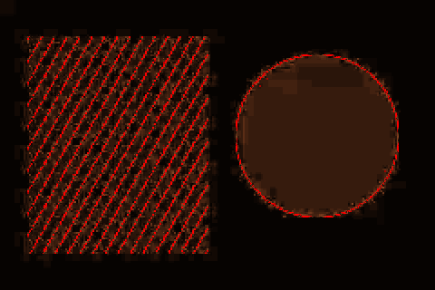 |
| paints Linear / radial / angular / diamond gradients, image fill, noise | mp4 avc1.64001f yuv420p bt709/bt709/iec61966-2-1/tv |
pass | 0 | 1.47 | 50 | 0.04% | 3.30 | 1.46 |  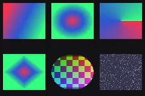  |
| paints Linear / radial / angular / diamond gradients, image fill, noise | mp4hq avc1.64001f yuv420p bt709/bt709/iec61966-2-1/tv |
pass | 0 | 1.47 | 50 | 0.04% | 3.30 | 1.46 |   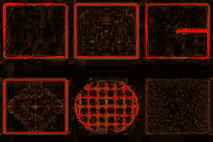 |
| paints Linear / radial / angular / diamond gradients, image fill, noise | preview | pass | 0 | 1.45 | 72 | 0.08% | 1.77 | 1.42 | 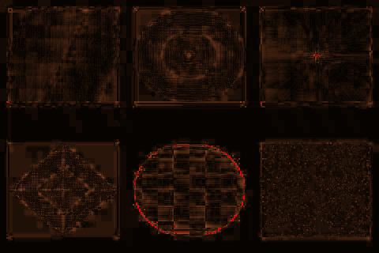 |
| effects Drop / inner shadow, layer blur, background blur, noise effect | preview | pass | 0 | 1.35 | 71 | 0.18% | 1.53 | 1.16 | 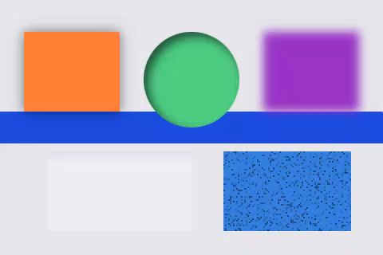 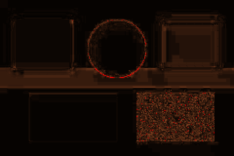 |
| blend All 18 blend modes over a gradient backdrop | gif | pass | 0 | 1.31 | 16 | 0.00% | 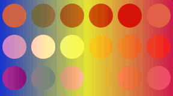 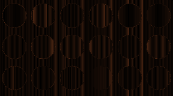 | ||
| colour Colour chart (flat patches) | preview | pass | 0 | 1.26 | 32 | 0.01% | 1.38 | 1.83 | 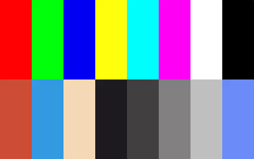 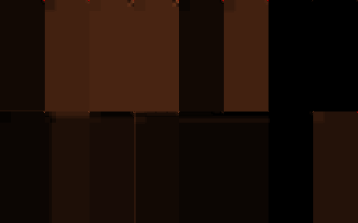 |
| blend All 18 blend modes over a gradient backdrop | mp4 avc1.64001f yuv420p bt709/bt709/iec61966-2-1/tv |
pass | 0 | 1.24 | 28 | 0.01% | 1.70 |  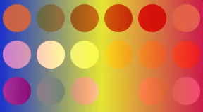  | |
| blend All 18 blend modes over a gradient backdrop | mp4hq avc1.64001f yuv420p bt709/bt709/iec61966-2-1/tv |
pass | 0 | 1.24 | 28 | 0.01% | 1.70 |   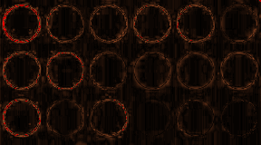 | |
| shaders Shader fill (animated) + shader effect (test shaders) | mp4 avc1.64001f yuv420p bt709/bt709/iec61966-2-1/tv |
pass | 0 | 1.12 | 40 | 0.24% | 3.42 | 1.09 |  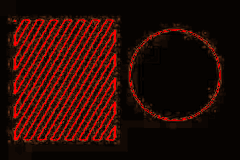 |
| shaders Shader fill (animated) + shader effect (test shaders) | mp4hq avc1.64001f yuv420p bt709/bt709/iec61966-2-1/tv |
pass | 0 | 1.12 | 40 | 0.24% | 3.42 | 1.09 |    |
| effects Drop / inner shadow, layer blur, background blur, noise effect | mp4 avc1.64001f yuv420p bt709/bt709/iec61966-2-1/tv |
pass | 0 | 0.97 | 29 | 0.02% | 1.97 | 0.73 |   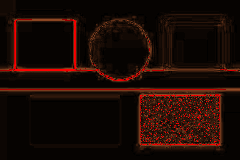 |
| effects Drop / inner shadow, layer blur, background blur, noise effect | mp4hq avc1.64001f yuv420p bt709/bt709/iec61966-2-1/tv |
pass | 0 | 0.97 | 29 | 0.02% | 1.97 | 0.73 | 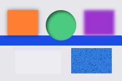 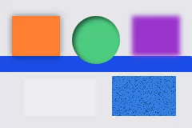  |
| shapes Rect / ellipse / path / strokes, animated transforms | preview | pass | 0 | 0.83 | 73 | 0.58% | 1.22 | 1.18 | 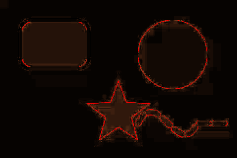 |
| paints Linear / radial / angular / diamond gradients, image fill, noise | webm vp09.00.41.08 yuv420p bt709/bt709/iec61966-2-1/tv |
pass | 0 | 0.82 | 21 | 0.00% | 2.73 | 0.99 |  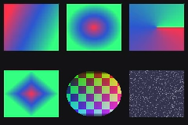 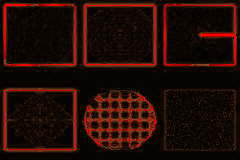 |
| shaders Shader fill (animated) + shader effect (test shaders) | webm vp09.00.41.08 yuv420p bt709/bt709/iec61966-2-1/tv |
pass | 1 | 0.79 | 33 | 0.03% | 3.11 | 0.81 | 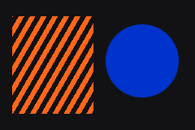 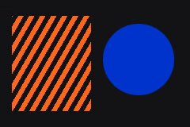 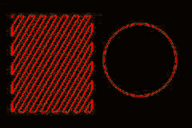 |
| masks Alpha / luminance / vector masks, clip group | preview | pass | 0 | 0.78 | 81 | 0.37% | 1.12 | 1.16 | 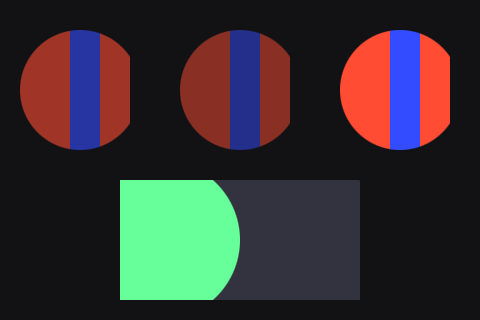 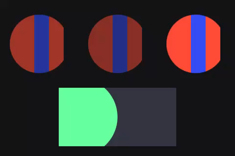 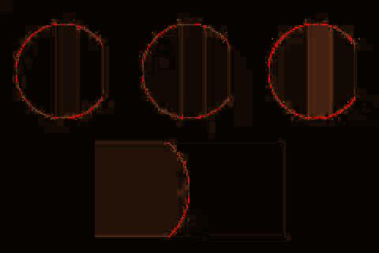 |
| text Text: weights, italic, alignment, wrapping, spacing, case, runs, decoration | preview | pass | 0 | 0.75 | 77 | 0.17% | 1.04 | 0.97 | 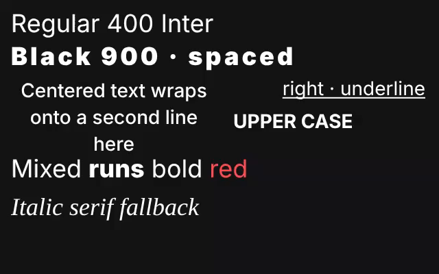 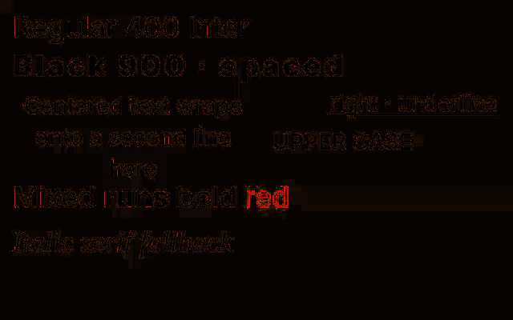 |
| blend All 18 blend modes over a gradient backdrop | webm vp09.00.41.08 yuv420p bt709/bt709/iec61966-2-1/tv |
pass | 0 | 0.66 | 14 | 0.00% | 1.17 |  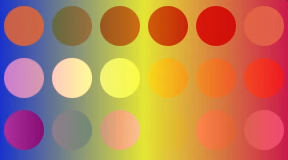 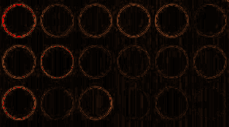 | |
| transparent Transparent background, semi-transparent layers | preview | pass | 0 | 0.65 | 73 | 0.22% | 0.70 | 0.77 | 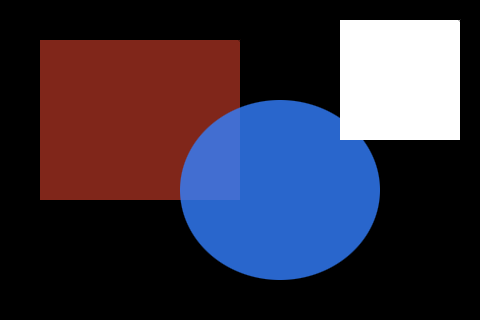 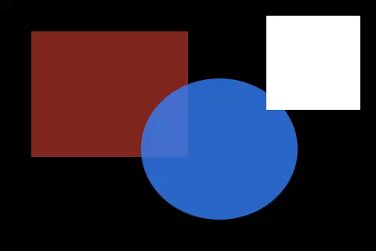 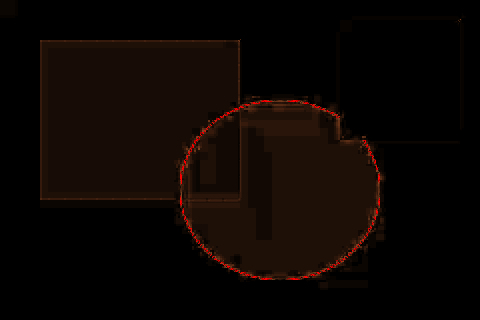 |
| effects Drop / inner shadow, layer blur, background blur, noise effect | gif | pass | 15 | 0.62 | 9 | 0.00% | 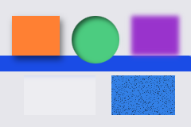 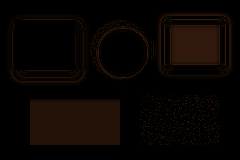 | ||
| group-opacity Group opacity (isolated), nested parents, precomp-free hierarchy | preview | pass | 0 | 0.62 | 81 | 0.25% | 0.90 | 1.01 | 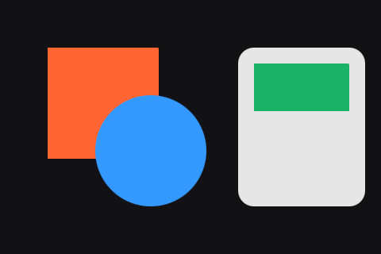 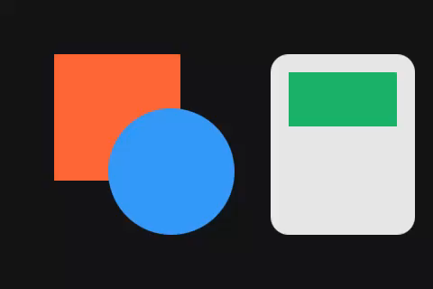 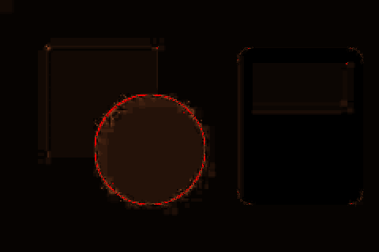 |
| masks Alpha / luminance / vector masks, clip group | mp4 avc1.64001f yuv420p bt709/bt709/iec61966-2-1/tv |
pass | 0 | 0.61 | 34 | 0.02% | 1.74 | 1.03 |   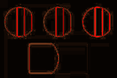 |
| masks Alpha / luminance / vector masks, clip group | mp4hq avc1.64001f yuv420p bt709/bt709/iec61966-2-1/tv |
pass | 0 | 0.61 | 34 | 0.02% | 1.74 | 1.03 |  |
| text Text: weights, italic, alignment, wrapping, spacing, case, runs, decoration | mp4 avc1.64001f yuv420p bt709/bt709/iec61966-2-1/tv |
pass | 28 | 0.60 | 84 | 0.03% | 1.17 | 0.84 | 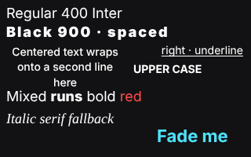 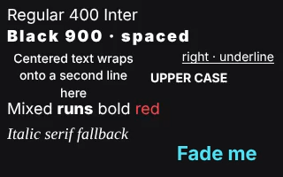  |
| text Text: weights, italic, alignment, wrapping, spacing, case, runs, decoration | mp4hq avc1.64001f yuv420p bt709/bt709/iec61966-2-1/tv |
pass | 28 | 0.60 | 84 | 0.03% | 1.17 | 0.84 |   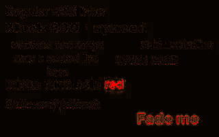 |
| paints Linear / radial / angular / diamond gradients, image fill, noise | gif | pass | 0 | 0.58 | 16 | 0.00% |  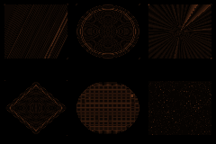 | ||
| effects Drop / inner shadow, layer blur, background blur, noise effect | webm vp09.00.41.08 yuv420p bt709/bt709/iec61966-2-1/tv |
pass | 1 | 0.53 | 19 | 0.00% | 1.63 | 0.56 | 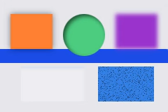 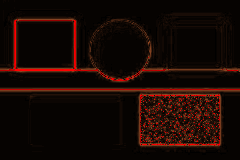 |
| precomp Precomp with start offset, nested twice | preview | pass | 0 | 0.52 | 31 | 0.00% | 0.76 | 1.02 | |
| expressions Expressions: wiggle (seeded), random, time, loopOut | preview | pass | 0 | 0.52 | 60 | 0.10% | 0.85 | 1.03 | 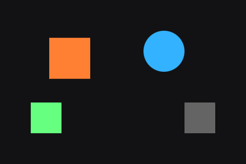 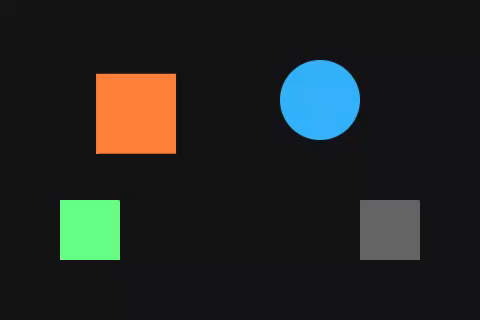 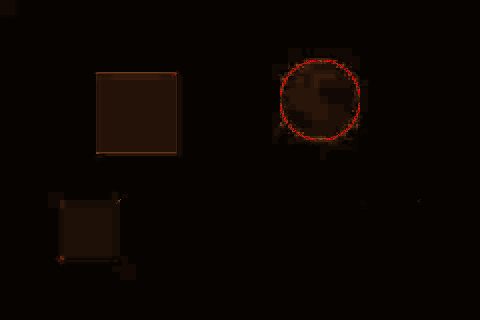 |
| timing Frame barcode (30 fps) | preview | pass | 0 | 0.52 | 30 | 0.00% | 0.73 | 0.97 | |
| trim Trim paths (animated) and path morph | preview | pass | 0 | 0.52 | 67 | 0.12% | 0.84 | 1.00 | |
| shapes Rect / ellipse / path / strokes, animated transforms | mp4 avc1.64001f yuv420p bt709/bt709/iec61966-2-1/tv |
pass | 0 | 0.52 | 28 | 0.02% | 1.18 | 0.78 |  |
| shapes Rect / ellipse / path / strokes, animated transforms | mp4hq avc1.64001f yuv420p bt709/bt709/iec61966-2-1/tv |
pass | 0 | 0.52 | 28 | 0.02% | 1.18 | 0.78 |   |
| springs Springs (bounce) on position / scale / rotation | preview | pass | 0 | 0.51 | 60 | 0.02% | 0.82 | 1.07 | |
| blend All 18 blend modes over a gradient backdrop | lottie | pass reported before export (excluded): linearBurn (blend), add (blend) |
0 | 0.47 | 47 | 0.04% | |||
| shapes Rect / ellipse / path / strokes, animated transforms | lottie | pass | 22 | 0.39 | 62 | 0.60% | |||
| group-opacity Group opacity (isolated), nested parents, precomp-free hierarchy | mp4 avc1.64001f yuv420p bt709/bt709/iec61966-2-1/tv |
pass | 0 | 0.38 | 29 | 0.01% | 1.13 | 0.84 |  |
| group-opacity Group opacity (isolated), nested parents, precomp-free hierarchy | mp4hq avc1.64001f yuv420p bt709/bt709/iec61966-2-1/tv |
pass | 0 | 0.38 | 29 | 0.01% | 1.13 | 0.84 |   |
| group-opacity Group opacity (isolated), nested parents, precomp-free hierarchy | lottie | pass | 43 | 0.32 | 52 | 0.04% | |||
| audio Audio clicks (offset 0.25 s) + flash frames | preview | pass | 1 | 0.28 | 46 | 0.21% | 0.70 | 0.79 | |
| transparent Transparent background, semi-transparent layers | mp4 avc1.64001f yuv420p bt709/bt709/iec61966-2-1/tv |
pass | 1 | 0.27 | 30 | 0.01% | 0.47 | 0.22 |   |
| transparent Transparent background, semi-transparent layers | mp4hq avc1.64001f yuv420p bt709/bt709/iec61966-2-1/tv |
pass | 1 | 0.27 | 30 | 0.01% | 0.47 | 0.22 |  |
| masks Alpha / luminance / vector masks, clip group | webm vp09.00.41.08 yuv420p bt709/bt709/iec61966-2-1/tv |
pass | 1 | 0.25 | 33 | 0.01% | 1.47 | 0.71 | |
| shapes Rect / ellipse / path / strokes, animated transforms | webm vp09.00.41.08 yuv420p bt709/bt709/iec61966-2-1/tv |
pass | 15 | 0.25 | 33 | 0.00% | 0.94 | 0.62 | |
| expressions Expressions: wiggle (seeded), random, time, loopOut | mp4 avc1.64001f yuv420p bt709/bt709/iec61966-2-1/tv |
pass | 1 | 0.24 | 48 | 0.06% | 0.91 | 0.75 |   |
| expressions Expressions: wiggle (seeded), random, time, loopOut | mp4hq avc1.64001f yuv420p bt709/bt709/iec61966-2-1/tv |
pass | 1 | 0.24 | 48 | 0.06% | 0.91 | 0.75 |  |
| group-opacity Group opacity (isolated), nested parents, precomp-free hierarchy | gif | pass | 22 | 0.22 | 12 | 0.00% | |||
| group-opacity Group opacity (isolated), nested parents, precomp-free hierarchy | webm vp09.00.41.08 yuv420p bt709/bt709/iec61966-2-1/tv |
pass | 15 | 0.21 | 15 | 0.00% | 0.96 | 0.76 | |
| text Text: weights, italic, alignment, wrapping, spacing, case, runs, decoration | webm vp09.00.41.08 yuv420p bt709/bt709/iec61966-2-1/tv |
pass | 0 | 0.20 | 13 | 0.00% | 0.68 | 0.69 | |
| colour Colour chart (flat patches) | lottie | pass | 0 | 0.19 | 32 | 0.09% |  | ||
| text Text: weights, italic, alignment, wrapping, spacing, case, runs, decoration | gif | pass | 20 | 0.19 | 11 | 0.00% | |||
| audio Audio clicks (offset 0.25 s) + flash frames | mp4 avc1.64001f yuv420p bt709/bt709/iec61966-2-1/tv |
pass | 1 | 0.19 | 17 | 0.00% | 0.70 | 0.66 |  |
| audio Audio clicks (offset 0.25 s) + flash frames | mp4hq avc1.64001f yuv420p bt709/bt709/iec61966-2-1/tv |
pass | 1 | 0.19 | 17 | 0.00% | 0.70 | 0.66 |   |
| effects Drop / inner shadow, layer blur, background blur, noise effect | lottie | pass reported before export (excluded): background blur (background-blur) |
10 | 0.18 | 52 | 0.02% | |||
| shapes Rect / ellipse / path / strokes, animated transforms | gif | pass | 1 | 0.17 | 10 | 0.00% | |||
| masks Alpha / luminance / vector masks, clip group | lottie | pass | 15 | 0.16 | 48 | 0.26% | |||
| expressions Expressions: wiggle (seeded), random, time, loopOut | webm vp09.00.41.08 yuv420p bt709/bt709/iec61966-2-1/tv |
pass | 1 | 0.15 | 27 | 0.00% | 0.83 | 0.71 | |
| colour Colour chart (flat patches) | mp4 avc1.64001f yuv420p bt709/bt709/iec61966-2-1/tv |
pass | 0 | 0.15 | 32 | 0.01% | 1.34 | 0.33 |   |
| colour Colour chart (flat patches) | mp4hq avc1.64001f yuv420p bt709/bt709/iec61966-2-1/tv |
pass | 0 | 0.15 | 32 | 0.01% | 1.34 | 0.33 |  |
| trim Trim paths (animated) and path morph | mp4 avc1.64001f yuv420p bt709/bt709/iec61966-2-1/tv |
pass | 1 | 0.14 | 24 | 0.00% | 0.69 | 0.73 |  |
| trim Trim paths (animated) and path morph | mp4hq avc1.64001f yuv420p bt709/bt709/iec61966-2-1/tv |
pass | 1 | 0.14 | 24 | 0.00% | 0.69 | 0.73 |   |
| colour Colour chart (flat patches) | webm vp09.00.41.08 yuv420p bt709/bt709/iec61966-2-1/tv |
pass | 1 | 0.14 | 32 | 0.01% | 1.34 | 0.31 |  |
| trim Trim paths (animated) and path morph | gif | pass | 30 | 0.14 | 9 | 0.00% | |||
| audio Audio clicks (offset 0.25 s) + flash frames | webm vp09.00.41.08 yuv420p bt709/bt709/iec61966-2-1/tv |
pass | 2 | 0.14 | 13 | 0.00% | 0.66 | 0.62 | |
| transparent Transparent background, semi-transparent layers | webm vp09.00.41.08 yuv420p bt709/bt709/iec61966-2-1/tv |
pass | 1 | 0.13 | 12 | 0.00% | 0.34 | 0.09 |  |
| expressions Expressions: wiggle (seeded), random, time, loopOut | gif | pass | 30 | 0.13 | 16 | 0.00% | |||
| paints Linear / radial / angular / diamond gradients, image fill, noise | lottie | pass | 0 | 0.13 | 60 | 0.04% |  | ||
| audio Audio clicks (offset 0.25 s) + flash frames | lottie | pass | 31 | 0.13 | 59 | 0.36% |  | ||
| timing Frame barcode (30 fps) | mp4 avc1.64001f yuv420p bt709/bt709/iec61966-2-1/tv |
pass | 0 | 0.12 | 19 | 0.00% | 0.62 | 0.66 |   |
| timing Frame barcode (30 fps) | mp4hq avc1.64001f yuv420p bt709/bt709/iec61966-2-1/tv |
pass | 0 | 0.12 | 19 | 0.00% | 0.62 | 0.66 |   |
| springs Springs (bounce) on position / scale / rotation | lottie | pass | 30 | 0.12 | 67 | 0.35% | |||
| springs Springs (bounce) on position / scale / rotation | mp4 avc1.64001f yuv420p bt709/bt709/iec61966-2-1/tv |
pass | 60 | 0.11 | 80 | 0.04% | 0.73 | 0.73 |  |
| springs Springs (bounce) on position / scale / rotation | mp4hq avc1.64001f yuv420p bt709/bt709/iec61966-2-1/tv |
pass | 60 | 0.11 | 80 | 0.04% | 0.73 | 0.73 |   |
| timing Frame barcode (30 fps) | webm vp09.00.41.08 yuv420p bt709/bt709/iec61966-2-1/tv |
pass | 2 | 0.11 | 33 | 0.01% | 0.63 | 0.65 | |
| trim Trim paths (animated) and path morph | lottie | pass | 30 | 0.10 | 73 | 0.35% |  | ||
| transparent Transparent background, semi-transparent layers | lottie | pass | 0 | 0.10 | 64 | 0.15% | |||
| precomp Precomp with start offset, nested twice | lottie | pass | 20 | 0.10 | 55 | 0.24% | |||
| precomp Precomp with start offset, nested twice | mp4 avc1.64001f yuv420p bt709/bt709/iec61966-2-1/tv |
pass | 40 | 0.10 | 77 | 0.03% | 0.73 | 0.73 |   |
| precomp Precomp with start offset, nested twice | mp4hq avc1.64001f yuv420p bt709/bt709/iec61966-2-1/tv |
pass | 40 | 0.10 | 77 | 0.03% | 0.73 | 0.73 |  |
| trim Trim paths (animated) and path morph | webm vp09.00.41.08 yuv420p bt709/bt709/iec61966-2-1/tv |
pass | 30 | 0.10 | 48 | 0.01% | 0.78 | 0.68 |  |
| transparent Transparent background, semi-transparent layers | gif | pass | 10 | 0.10 | 14 | 0.00% | |||
| expressions Expressions: wiggle (seeded), random, time, loopOut | lottie | pass | 59 | 0.09 | 168 | 0.12% | |||
| springs Springs (bounce) on position / scale / rotation | webm vp09.00.41.08 yuv420p bt709/bt709/iec61966-2-1/tv |
pass | 45 | 0.08 | 14 | 0.00% | 0.71 | 0.65 | |
| precomp Precomp with start offset, nested twice | webm vp09.00.41.08 yuv420p bt709/bt709/iec61966-2-1/tv |
pass | 40 | 0.07 | 84 | 0.01% | 0.71 | 0.69 |  |
| timing Frame barcode (30 fps) | lottie | pass | 31 | 0.05 | 59 | 0.06% | |||
| text Text: weights, italic, alignment, wrapping, spacing, case, runs, decoration | lottie | pass | 29 | 0.04 | 2 | 0.00% | |||
| masks Alpha / luminance / vector masks, clip group | gif | pass | 43 | 0.02 | 11 | 0.00% | |||
| audio Audio clicks (offset 0.25 s) + flash frames | gif | pass | 0 | 0.01 | 8 | 0.00% | |||
| springs Springs (bounce) on position / scale / rotation | gif | pass | 25 | 0.01 | 9 | 0.00% | |||
| precomp Precomp with start offset, nested twice | gif | pass | 20 | 0.01 | 10 | 0.00% | |||
| shaders Shader fill (animated) + shader effect (test shaders) | lottie | pass | 20 | 0.01 | 60 | 0.01% | |||
| shaders Shader fill (animated) + shader effect (test shaders) | gif | pass | 0 | 0.00 | 8 | 0.00% | |||
| timing Frame barcode (30 fps) | gif | pass | 0 | 0.00 | 5 | 0.00% | |||
| trim Trim paths (animated) and path morph | pngseq | pass | 22 | 0.00 | 2 | 0.00% |  | ||
| trim Trim paths (animated) and path morph | png | pass | 44 | 0.00 | 1 | 0.00% |   | ||
| timing Frame barcode (30 fps) | png | pass | 0 | 0.00 | 0 | 0.00% |   | ||
| timing Frame barcode (30 fps) | pngseq | pass | 0 | 0.00 | 0 | 0.00% |   | ||
| colour Colour chart (flat patches) | png | pass | 0 | 0.00 | 0 | 0.00% |    | ||
| colour Colour chart (flat patches) | pngseq | pass | 0 | 0.00 | 0 | 0.00% |   | ||
| colour Colour chart (flat patches) | gif | pass | 0 | 0.00 | 0 | 0.00% |    | ||
| shapes Rect / ellipse / path / strokes, animated transforms | png | pass | 0 | 0.00 | 0 | 0.00% |    | ||
| shapes Rect / ellipse / path / strokes, animated transforms | pngseq | pass | 0 | 0.00 | 0 | 0.00% |   | ||
| paints Linear / radial / angular / diamond gradients, image fill, noise | png | pass | 0 | 0.00 | 0 | 0.00% |   | ||
| paints Linear / radial / angular / diamond gradients, image fill, noise | pngseq | pass | 0 | 0.00 | 0 | 0.00% |    | ||
| effects Drop / inner shadow, layer blur, background blur, noise effect | png | pass | 0 | 0.00 | 0 | 0.00% |    | ||
| effects Drop / inner shadow, layer blur, background blur, noise effect | pngseq | pass | 0 | 0.00 | 0 | 0.00% |   | ||
| shaders Shader fill (animated) + shader effect (test shaders) | png | pass | 0 | 0.00 | 0 | 0.00% |   | ||
| shaders Shader fill (animated) + shader effect (test shaders) | pngseq | pass | 0 | 0.00 | 0 | 0.00% |    | ||
| masks Alpha / luminance / vector masks, clip group | png | pass | 0 | 0.00 | 0 | 0.00% |   | ||
| masks Alpha / luminance / vector masks, clip group | pngseq | pass | 0 | 0.00 | 0 | 0.00% |    | ||
| blend All 18 blend modes over a gradient backdrop | png | pass | 0 | 0.00 | 0 | 0.00% |   | ||
| blend All 18 blend modes over a gradient backdrop | pngseq | pass | 0 | 0.00 | 0 | 0.00% |    | ||
| group-opacity Group opacity (isolated), nested parents, precomp-free hierarchy | png | pass | 0 | 0.00 | 0 | 0.00% |    | ||
| group-opacity Group opacity (isolated), nested parents, precomp-free hierarchy | pngseq | pass | 0 | 0.00 | 0 | 0.00% |   | ||
| text Text: weights, italic, alignment, wrapping, spacing, case, runs, decoration | png | pass | 0 | 0.00 | 0 | 0.00% |  | ||
| text Text: weights, italic, alignment, wrapping, spacing, case, runs, decoration | pngseq | pass | 0 | 0.00 | 0 | 0.00% |    | ||
| expressions Expressions: wiggle (seeded), random, time, loopOut | png | pass | 0 | 0.00 | 0 | 0.00% |   | ||
| expressions Expressions: wiggle (seeded), random, time, loopOut | pngseq | pass | 0 | 0.00 | 0 | 0.00% |    | ||
| springs Springs (bounce) on position / scale / rotation | png | pass | 0 | 0.00 | 0 | 0.00% |    | ||
| springs Springs (bounce) on position / scale / rotation | pngseq | pass | 0 | 0.00 | 0 | 0.00% |   | ||
| precomp Precomp with start offset, nested twice | png | pass | 0 | 0.00 | 0 | 0.00% |    | ||
| precomp Precomp with start offset, nested twice | pngseq | pass | 0 | 0.00 | 0 | 0.00% |   | ||
| transparent Transparent background, semi-transparent layers | png | pass | 0 | 0.00 | 0 | 0.00% |    | ||
| transparent Transparent background, semi-transparent layers | pngseq | pass | 0 | 0.00 | 0 | 0.00% |   | ||
| audio Audio clicks (offset 0.25 s) + flash frames | png | pass | 0 | 0.00 | 0 | 0.00% |   | ||
| audio Audio clicks (offset 0.25 s) + flash frames | pngseq | pass | 0 | 0.00 | 0 | 0.00% |   |